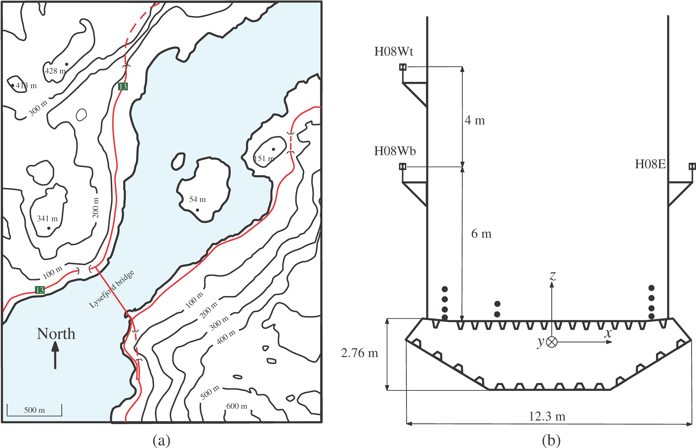
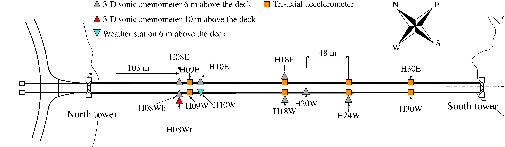
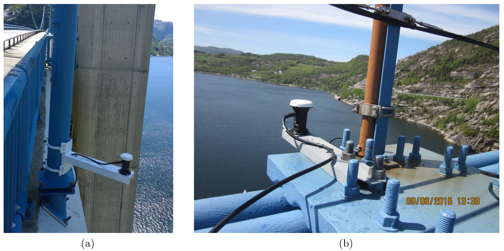
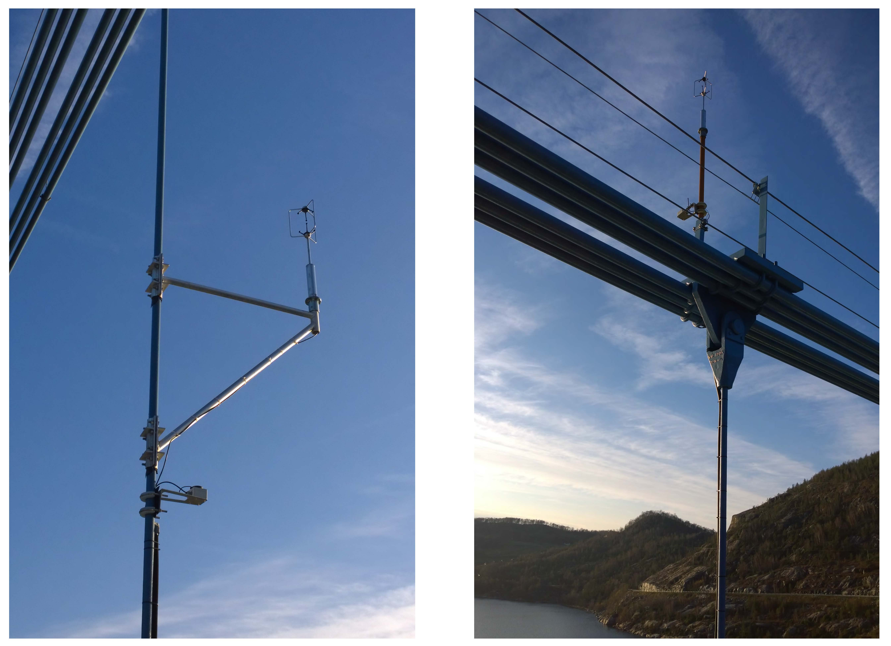
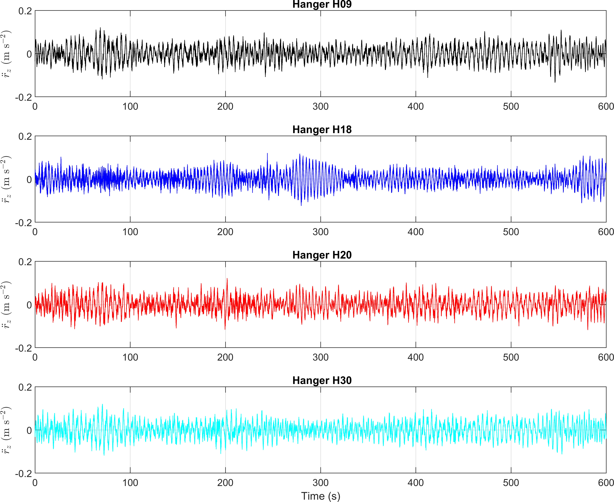
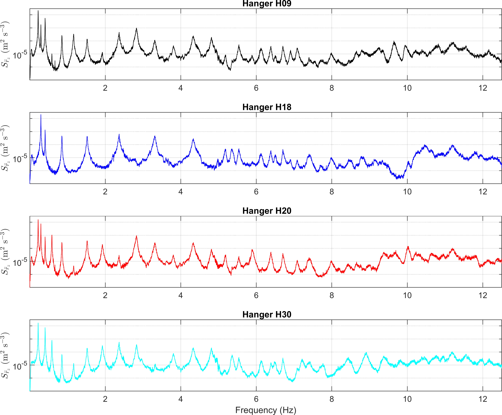
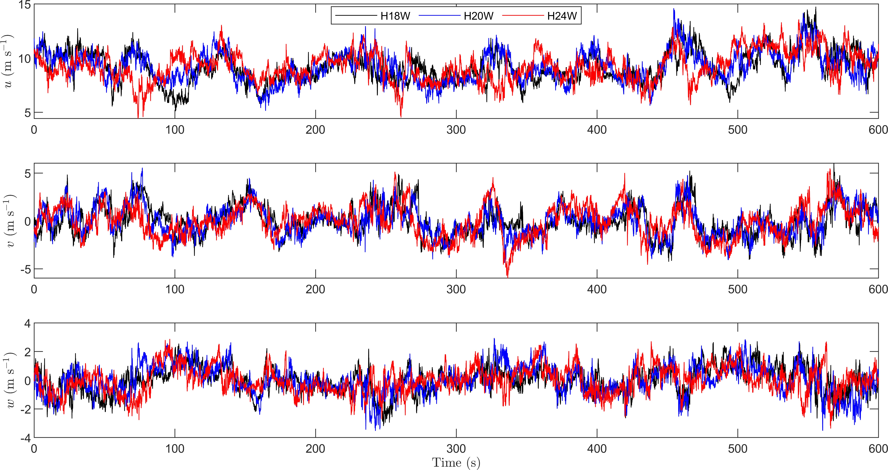
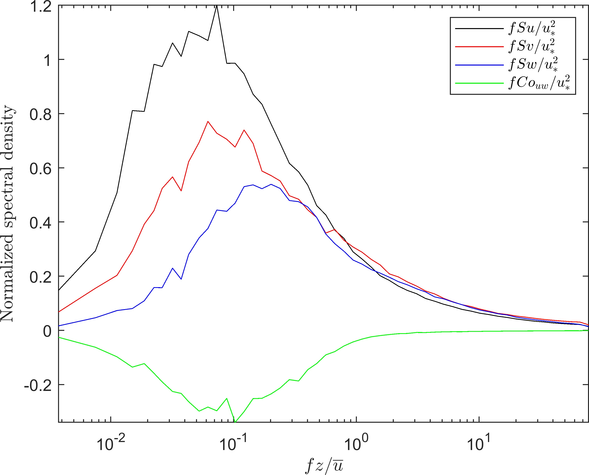

Wind and structural health monitoring is an essential step of the validation of the buffeting theory, which describes the
wind-induced response of a structure to atmospheric turbulence. The Lysefjord suspension Bridge has been used since 2013 as a full-scale wind
engineering laboratory and is now instrumented with nine 3D sonic anemometers as well as four pairs of tri-axial accelerometers inside the deck.
This makes the bridge one of the world's most densely instrumented suspension bridge in terms of wind sensors.
A master data logging unit synchronizes all the data into a single data file, which is then continuously transmitted via mobile net.
Introduction
The deployment of Structural Health Monitoring systems (SHMS) on long-span suspension bridges aims to identify the modal parameters of such structures, i.e. its eigenfrequencies,
mode shapes and damping ratios. Accelerometers are traditionally used to monitor the dynamic displacements, but Global Navigation Satellite Systems
(GNSS) have been increasingly used for the last 20 years for a similar purpose. SHMS include also the possibility to study the influence of the temperature on the bridge displacement response.
Wind and Structural Health Monitoring systems (WASHMS) includes wind velocity measurements from the bridge deck.
Although WASHMS are uncommon, they allow a direct study of the wind-induced vibrations of the bridge.
The Lysefjord bridge instrumentation
The Lysefjord bridge is a suspension bridge with a main span of 446 m, crossing the inlet of a narrow and long fjord (Fig. 1).
The fjord is enclosed by mountains and steep hills that channel the flow, such that two main wind directions are primarily observed.
The first sector corresponds to a flow from north-northeast, i.e. from the inside of the fjord, at azimuth between 0° and 60°.
The second one corresponds to a flow from south-southwest, i.e. a wind direction between 180° and 270°.
The Lysefjord bridge has been instrumented with a wind and structural health monitoring system since November 2013.
In June 2017, the arrangement of the wind sensors was modified and three sonic anemometers were installed on the east side of the bridge.

Fig.1: (a) Topographic map of the Lysefjord bridge. (b) sketch of the cross-section of the Lysefjord bridge deck on hanger 08.
In Fig. 2, the position of the anemometers above the deck is defined using the hanger name HXY, where X is a digit between 08 and 24 indicating the hanger number,
and Y denotes the west side (W) or east side (E) of the deck.
Since two anemometers are mounted on the west hanger no. 08 (H08W), the notations H08Wb and H08Wt refer to the sonic anemometer mounted 6 m (bottom)
and 10 m (top) above the deck, respectively.

Fig. 2: Instrumentation of the Lysefjord bridge since June 2017. The distance between each hanger is 12 m.
Accelerometers and GNSS sensors
The accelerometers used are triaxial MEMs (microelectromechanical systems) silicon accelerometers from Canterbury Seismic Instruments Ltd.
Figure 3 shows an accelerometer within the bridge deck. Each section of the bridge has two sensors, one on either side of the bridge deck,
to monitor the bridge torsional response around its longitudinal axis (\( y \)), in addition to the translational responses.
The lateral distance between two accelerometers constituting a pair is ca. 7.15 m and the maximal sampling frequency of each accelerometer is 200 Hz.
Fig. 3: Accelerometers: Close up of the sensor.
In addition, the displacement of the bridge deck is monitored using a Real-Time Kinematic-Global Positioning System (RTK-GPS).
More precisely, as the rover is located on top of the main cable, it is the displacement of the main cable in the middle of the bridge span,
approximatively 3 m above the bridge girder that is being observed. The RTK-GPS base-rover combination improves the accuracy of measurements by recording
the relative displacement between a "fixed" base station on the northwest side and a "moving" rover station located on the main
cable at mid-span. Naturally, the accuracy varies depending on the quality of the instruments used. In the present case,
a set of Trimble BD930 GNSS receivers are coupled to Trimble AV33 GNSS antennas.
These sensors can handle data sampling at a frequency of 20 Hz, with an accuracy of \( \pm 8 \) mm \(+ 1 \) ppm for the horizontal displacements
and \( \pm 15 \) mm \(+1 \) ppm for the vertical displacements. The GPS technique is ideal for tracking the performances of long-span suspension bridges
due to their low natural frequency and large amplitude displacements.

Fig. 4: GNSS sensors, (a) The base antenna, (b) The rover antenna.
Anemometers
Eight of the sonic anemometers are 3-D WindMaster Pro from Gill instruments (Lymington, UK), which can operate with a sampling frequency up to 32 Hz.
The last sonic anemometer, mounted on H10W, is a Weather Transmitter WXT520 from Vaisala (Helsinki, Finland), which monitors the horizontal wind components, rainfall, relative humidity,
pressure and absolute temperature with a sampling frequency up to 4 Hz. The anemometers are either mounted directly on brackets that are fixed to the hangers (Fig. 5, left),
or placed on the top of a 2.5-m long vertical steel pole placed above the main cables and fixed to the safety railings for the main cables (Fig. 5, right).

Fig. 5: Anemometers installed on a hanger (left) and on top of a pole above the main cables (right).
What do the accelerometers see?
Figure 6 shows ten minutes of lateral acceleration data recorded by the four pairs of accelerometers near hangers 09, 18, 20 and 30.
These records correspond to wind-induced vibrations rather than traffic-induced vibrations.
At midspan (H18), the bridge response is dominated by a single mode of vibration with a period of ca. 7.4 s.
In the frequency domain, the associated power spectral density estimates of the lateral bridge acceleration response are displayed in Fig. 7.
The different peaks correspond to the lateral eigen-frequencies of the bridge.

Fig.6: Ten mintues of lateral bridge acceleration response recorded by the different acceerometers on the 19-06-2018 from 00:00.

Fig.7: Power spectral density estimates of the lateral bridge acceleration response, at different positions along the bridge deck.
What do the anemometers see?
Figure 8 shows ten minutes of velocity data recorded by three of the sonic anemometers on the west side of the bridge deck, for a flow from south-southwest.
The top panel shows the \(u\) component, the middle one the \(v\) component and the bottom panel corresponds to the \(w\) component.
For a given wind component, the time series are clearly correlated between each other, which reflects the existence of coherent structures.

Fig.8: Ten mintues of wind velocity records from the anemometers on H18W, H20W and H24W on the 19-06-2018 from 00:00.
Figure 9 shows the single-point auto and cross-power spectral densities associated with each of the component recorded on the east side of the bridge, for a flow from north-northeast.
The sonic anemometer used here is the one on H18E. The data set considered corresponds to several months of measurements, from July 2017 to June 2018, but
only the samples associated with a wind direction between 0° and 60° at midspan have been selected.

Fig.9: Power spectral density estimates of the turbulent wind velocity, recorded at midspan under neutral atmospheric conditions and for a wind from the inside of the fjord, between July 2017 and June 2018.